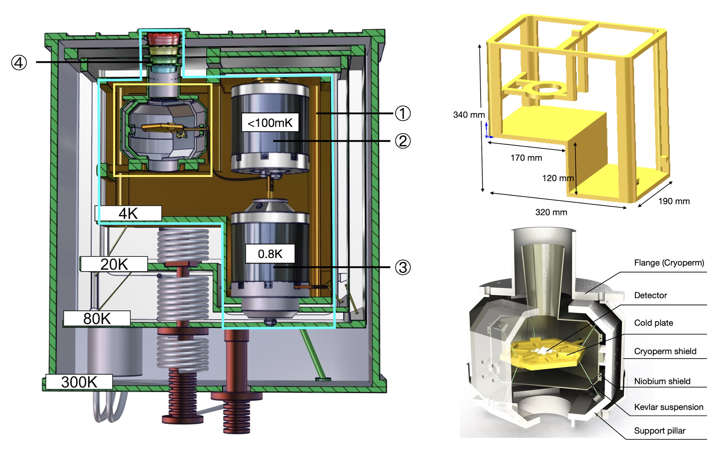
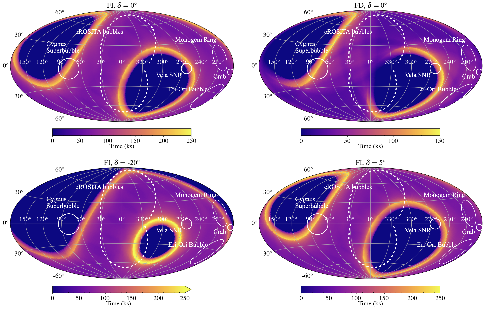
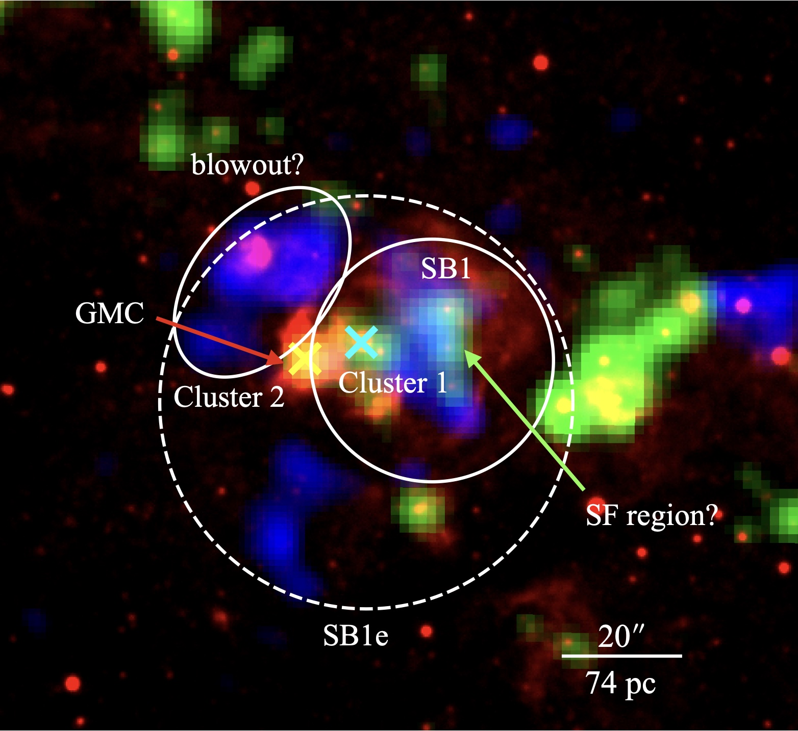
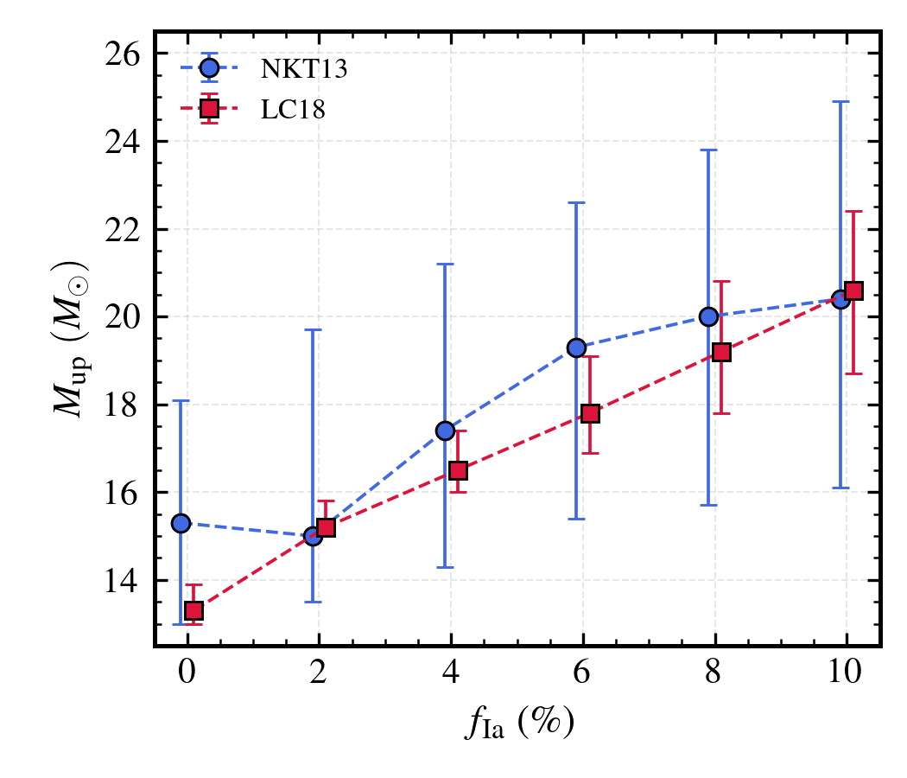

Research
I connect the development of future X-ray observatories with the science they will enable: tracing how stars shape the hot gas in and around galaxies.
Future high-resolution X-ray missions: instrument design and data-reduction preparation
Preparing DIXE for non-dispersive high-resolution X-ray spectroscopy with TES-based microcalorimeters, from detector hardware to survey analysis.
Future X-ray missions based on transition-edge sensor (TES) microcalorimeters will enable non-dispersive high-resolution X-ray spectroscopy of diffuse hot gas, allowing precise measurements of its temperature, energetics, kinematics, and elemental composition. These measurements will help unravel the physical processes that govern how baryons cycle through galaxies and their surroundings. My work on the DIffuse X-ray Explorer (DIXE) helps prepare for these observations by connecting the design of the cryogenic detector assembly with sky-survey simulations and data-analysis methods.
I develop the thermal and mechanical design, magnetic shielding, and optical blocking filters that support the TES array and its SQUID readout while protecting their performance. I also model sky-survey coverage and develop collimator-response demodulation methods to reconstruct point-like and extended sources, preparing DIXE to map and characterize the diffuse X-ray sky.
Detector design: Liu et al. (2024) · Liu et al. (2026), RAA, 26, 125020
{kind=link}

{kind=link}

X-ray bubbles interacting with their environment
A superbubble in M31 connects hot gas, molecular clouds, and young stars—offering evidence for positive stellar feedback.
{kind=link}

Massive stars can disrupt their surroundings, but their feedback may also help new stars form. The superbubble SB1 in M31 offers a nearby setting in which to investigate this connection.
We identified its hot interior through X-ray emission and compared it with the surrounding ionized gas, molecular material, and stellar populations. Young stars and molecular gas near the shell provide evidence that the expanding bubble may have promoted local star formation. This study connects the energy released by one generation of stars to the environment of the next.
Testing the upper mass limit of supernova progenitors
NGC 3079’s nuclear X-ray abundances favor an upper mass cutoff of about 13–21 solar masses for core-collapse supernova progenitors in our enrichment models.
{kind=link}

I use high-resolution XMM-Newton spectra to investigate the upper mass limit of stars that enrich galactic gas through core-collapse supernovae. By accounting for gas at different temperatures and charge-exchange emission, we measure oxygen and neon relative to iron in NGC 3079’s nuclear region and compare these ratios with supernova-yield models.
After exploring uncertainties in the spectral models, supernova yields, and Type Ia contribution, we find no evidence for an upper cutoff above about 30 solar masses. This provides an X-ray test of the idea that some of the most massive stars collapse into black holes without producing visible supernovae.